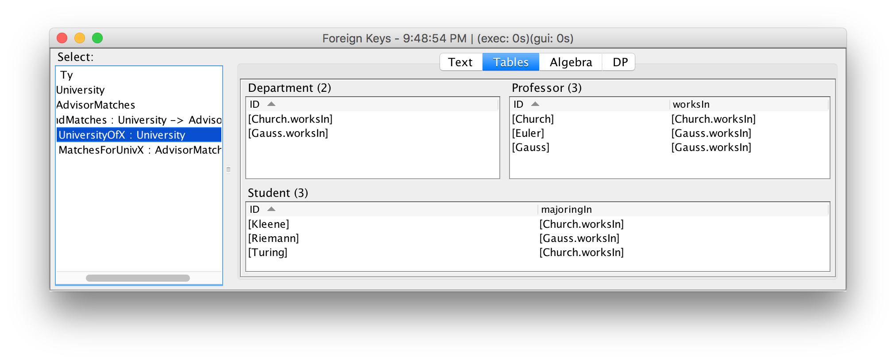
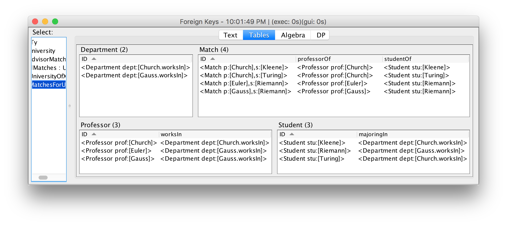
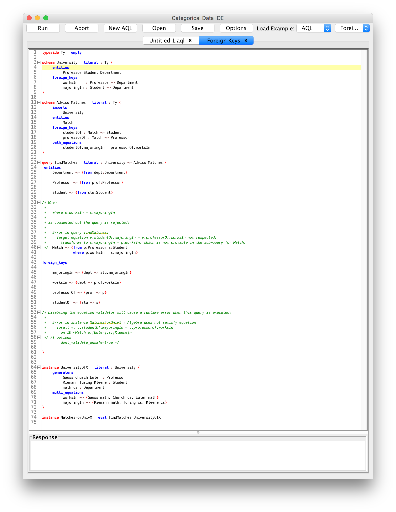

Categorical Databases
Home |
Download |
Getting Started |
Manual |
Wiki |
Papers |
Screen Shots |
Github |
Google Group |
Conexus |
Contact
Compile-time Foreign Key Checking
Many data integration tasks require creating multiple tables connected by foreign keys. Typically this process requires disabling foreign key constraints, loading data, and then enabling foreign key constraints, which triggers an expensive runtime check that the foreign key constraints hold and defers detection of foreign key related bugs until runtime. In CQL, queries that target schemas containing foreign keys are guaranteed, at compile time, and without accessing any source data, to always materialize target instances with correctly populated foreign keys. As a result, foreign key related errors are detected much earlier in the ETL process and without costly runtime-checking.
This example (built in to the IDE with name Foreign Keys) defines a source schema about departments, professors, and students, and a query to find all possible same-department professor-student advising matches. The target schema relates matches, professors, students, and departments through four foreign keys and an equation enforcing that in every match, the department the professor works in is the same as the department the student is majoring in. A query that incorrectly populates the target schema is shown to be rejected at compile time.
We start by defining a source schema for departments, professors, and students, with foreign keys specifying the department which each professor works in and which each student is majoring in. For brevity we use an empty typeside.
typeside Ty = empty
schema University = literal : Ty {
entities
Professor Student Department
foreign_keys
worksIn : Professor -> Department
majoringIn : Student -> Department
}
Here is some sample data:
instance UniversityOfX = literal : University {
generators
Gauss Church Euler : Professor
Riemann Turing Kleene : Student
math cs : Department
multi_equations
worksIn -> {Gauss math, Church cs, Euler math}
majoringIn -> {Riemann math, Turing cs, Kleene cs}
}

Our goal is to find all professor-student pairs where the professor and student share the same department. The target schema contains an additional entitiy for these matches, along with foreign keys to the professor and student involved, and an equation stating the that professor and student share the same department:
schema AdvisorMatches = literal : Ty {
imports
University
entities
Match
foreign_keys
studentOf : Match -> Student
professorOf : Match -> Professor
path_equations
studentOf.majoringIn = professorOf.worksIn
}
To populate the target schema we must give one sub query per target entity. The source tables are copied over directly. To populate the advisor matches, we iterate over all professors and students, dereferencing foreign keys (using the dot operator) instead of performing joins with Department. The where clause selects the professors and students which share the same department. Finally, for each foreign key in the target schema we must specify how it is to be populated. For example, the majoringIn foreign key takes students to departments; therefore, in the foreign keys clause for majoringIn, we must provide a department (dept), namely (stu.majoringIn), for each student (stu).
query findMatches = literal : University -> AdvisorMatches {
entities
Department -> {from dept:Department}
Professor -> {from prof:Professor}
Student -> {from stu:Student}
Match -> {from p:Professor s:Student
where p.worksIn = s.majoringIn}
foreign_keys
majoringIn -> {dept -> stu.majoringIn}
worksIn -> {dept -> prof.worksIn}
professorOf -> {prof -> p}
studentOf -> {stu -> s}
}
instance MatchesForUnivX = eval findMatches UniversityOfX
The result is displayed in the IDE. Note that the generated IDs for the matches contain the provenance, or lineage, of how the match was formed.
If the sub query for Match does not correctly populate the target table, say because of a typo:
Match -> {from p:Professor s:Student
where p.worksIn = p.worksIn}
The IDE rejects the query at compile time:
Error in query findMatches: Target equation v.studentOf.majoringIn = v.professorOf.worksIn not respected: transforms to s.majoringIn = p.worksIn which is not provable in the sub-query for Match.
A screen shot of the entire development is shown below:
